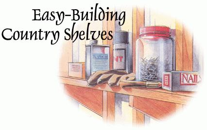
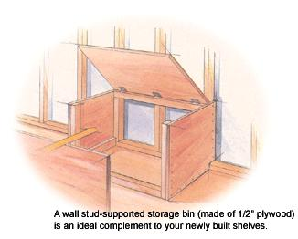
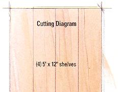
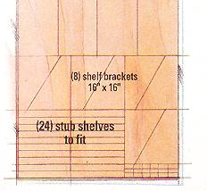
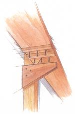
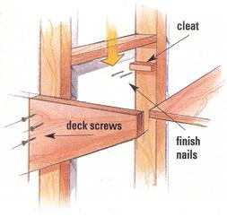
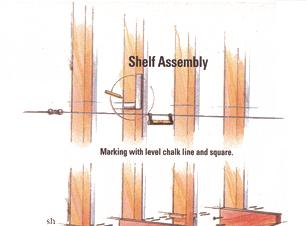
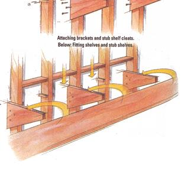

MOTHER'S WOODSHOP
A place for everything...
On any self-sustaining country- place, we accumulate great heaps of stuff that we don't need every day, but that we wait in clear view and close at hand when we do: books; hand and power tools; the sausage-stuffer and canning equipment; seasonal ornaments and kid's toys; engine oil and dry-food stores; leftover wall-paper and paints; nails, screws, and adhesives; and more tools. If such items are stashed away in drawers or boxes, the back or bottom layers will inevitably be forgotten and lost. How many half-used containers of putty, paint, and fluid adhesive have you misplaced, forgotten, and discovered years later, dried up and ruined?
I find that the best way to keep track of stuff is to store it out of the way but in full view and in easy-to-reach spots on the otherwise unused overheads and unfinished walls of the house and barn. Fixed storage shelves can be easily erected on stout wooden brackets fastened to open wall studs, using a few simple tools. elementary fasteners, and straight cuts in stock lumber and sheet goods.
A majority of the walls in most spread-out country places are finished on the outside, but on the inside, the 2 x 4 or larger vertical posts or studs are exposed on three sides. Most of this wall area is ignored and wasted. Insulating, sheathing, trimming, and hidden-wiring such spaces is a major undertaking that's justified only if you need an additional interior room: an added bedroom, playroom, or office. But with minimal effort and expense, the space can be utilized as is: the open studs can be converted to storage walls, rendering the unfinished area a useful, informal, temperate-weather living or working space-a storage pantry, shop, rough-finished dorm, indoor-outdoor room, or summer kitchen. Here is how to build shelves that will put all of that wasted space to good use.
First, plan and lay out the shelves. Pick your most open, accessible wall. The back wall of a garage is better time side walls that can be crowded when a vehicle is parked inside. Move the stuff that's already stacked up, nailed onto, or leaned against the wall. Get it far enough away so that you have working space to set up a pair of sawhorse or better, two pairs with a 4' x 8' sheet of "-thick plywood on top for a worktable. Mount lengths of sacrificial 2 x 4 atop the horses, so you call make shallow cuts into them while sawing shelving and supports without worry.
Mark your shelf locations on one of the outboard (shelf-end) studs.
Utility shelves should be at least 12" apart, one above the other; 16" spacing is even better. You want to be able to get both areas (and mead and shoulders along with them) in and around to unload a lap-sized gas engine, for instance, or an empty pickle crock. On an 8' (or 96") wall, you can fit four amply spaced shelves and a good under-shelf area to store heavy stuff by marking the stud at 24", 40", 56", and 72" clown from the bottom of the roof beams. Using a carpenter's level and pencil or a chalk line with a line-level hooked on it, mark shelf-level lines across the front edge of the studs.
With a try square or level, draw front-to-back level lines on the inner faces of' the studs at each shelf line. The cross-stud line will describe bottoms of your shelves. The short front-to-back lines on the insides of the studs will describe tops of the rear 3i" of your shelf brackets and of the cleats on opposing studs, which will hold the intra-stud stub shelves.
Now, decide how deep you want your shelves to be. With the stub shelves, they'll have 35" of depth at the rear, between studs. Six-inch planks can be cheap; one will produce 9" shelves and a pair will make 15" shelves; a 10"-wide plank will get you 13"-plus shelf. Take your pick.
On a piece of 3/4"-thick hardwood. 12" x 2"-thick softwood framing lumber, or 3/4" or thicker plywood, mark out your triangular shelf brackets (see cutting diagram, right).
Two legs of each triangle form a 90°, or right, angle. The top, horizontal leg should measure the 3 1/2" width of the wall studs plus the width of your shelf stock.
The rear, vertical leg that rests against the inside of the exterior sheathing (or the back of the stud of an open frame partition) can be as long as you like, but the longer the better. Most economical is to make top and back dimensions the same, giving you equilateral triangles that can be made by marking out a square and cutting it in half along the angle between opposing corners.
Most ornamental is to cut the angle in a graceful "S" curve. This requires a lot of work with a hand coping saw or a few seconds with an electric-powered band saw, a large jigsaw, or a hand-held electric saber saw.
Now, select self-tapping deck drywall screws that are at least an inch longer than your brackets are thick. Screwing these through pilot drill holes, install your bracket~ on the studs, so the brackets' top horizontal edges arc level and even with the chalk line and their back edges are flush against the sheathing.
Simplest and strongest is to attach a bracket to one side of each stud. If you space them at every other stud, distances will be 32" between 16'-on-center studs, and your shelves will likely sag under heavy loads. unless shelving is 3/4" or thicker.
However, for normal homestead shelving, two brackets are fine to hold a 4' run of shelf; use four brackets for an 8' shelf.
Most wood or wood-product shelving is 3/4" thick. Avoid the nominal 1" (actually, 3/4"-thick) sugar pine boards that are sold as "shelving" in lumberyards; it is fine for amply supported indoor shelves. but too soft and light for utility shelves. For normal utility loads and 32" bracket spacing. you can use 1" or 3/4" hardwood or sheet goods (plywood or particle-board) or 2" softwood framing lumber. Hardwood is strongest, but is hideously expensive at a dollar and more per board foot (12" x 12" x 1"), unless you buy locally cut lumber from a nearby mill and dry and finish it yourself. High-density, oriented-strand particleboard is cheapest, but is brittle and hard to saw, drill, and fasten with screws, Rest at about $30 a 4" x 8' x 3/4" sheet, is medium-grade plywood. Cheapest CDX-grade exterior-sheathing plywood, with rips, tears, and shallow knotholes on both surfaces, is OK for crude shelving, such as roosts in a henhouse, but looks ratty in living spaces. NA and AA top-grade ply is veneered on both sides, expensive, and is intended for furniture making. BB is smooth on both sides and is fine for painted surfaces. AB grade is medium-priced, veneered, has birch or another hardwood on one side, is smooth and relatively knotless on the other, and makes good-looking shelves when stained and varnished.
Plywood comes in 4' x 8' sheets that are awkward to haul in any vehicle, short of a full-size pickup truck. They're also heavy to carry and move around for sawing. I'd say 1/2" ply is about the heaviest that can be managed by one person. Sheets of 3/8" are light enough that I prefer them for any inside work, especially if above stairs. To increase thickness, I cut such things as shelf brackets from 3/8" ply in pairs and epoxy or contact-cement them together for a 3/8" thickness that will hold most loads. For best appearance, I use 3/8" ply that has at least one fine-finished side (AB grade), cut out a pair of brackets as mirror images, and glue them together with rougher sides facing in. For heaviest loads, I apply a 3/8" bracket to each side of the stud and trim a length of 2 x 4 to fit as a strengthening spacer between their angled legs. (For best fit and carrying strength, I trim the top-front point off the upper end, so it's level and fits flush to the shelf bottom, and I trim the lower-rear point off the bottom, so it rests flush with the vertical sheathing at the lower rear of the bracket.)
To cut shelves from ply: (1) support the entire sheet on sawhorses, (2) damp on an 8'-long steel or straight wood plank to guide the foot of a circular saw fitted with a fine-toothed plywood blade, and (3) set 1/8" deeper then the ply is thick.
Cut main shelf planks wide enough so that their front edges will be even with ends of brackets or will extend beyond brackets by up to one third of shelf width. Attach shelf planks to brackets with a pair of deck screws. This way you can remove there easily, yet they'll stay put when you are pulling off heavy things that might otherwise pull a loose shelf along with them.
If your run of shelves is longer than your lumber, piece together long shelves from short planks, being sure to keep the joints over brackets. For strongest construction, join pieces with angled cut-mirror cuts in adjoining planks. Fasten a pair of plank-wide cleats on the underside across the joint, one on each side of the bracket.
On bare studs opposite brackets, and on studs in wall bays lacking a bracket, attach a 3" cleat-a length of scrap lumber-under the mark drawn on earlier. Fasten these narrow pieces of wood with finish nails put through pilot holes. These, along with the inner 3" of the opposite bracket, will support the stub shelves-narrow boards that fit between studs behind main shelf planks, atop the cleats and rear section of the shelf brackets.
Cut stub shelves from 3"-wide stock the same thickness as your main shelves. Use a steel tape to measure for each one individually; distances between studs can vary. Cut for a snug fit and tap them in place with a wood block.
For crude but robust shelving, attach brackets to all studs. Lay 2"-thick framing lumber flat across the brackets. (It comes in 6", 8", 10" and 12" widths in addition to the familiar 2 x 4. You can mix and match widths to fill your brackets.) For real industrial-strength shelves, use 2 x 4s laid narrow dimension up and down. You could drive a truck on these type shelves.
Be sure to screw the front of 2 x 10 shelf timber to brackets. If a plank this size slips off the brackets as you pull down an engine head, it could do some industrial-strength damage to you, the truck, or both.
Don't be tempted to leave the wood of even garage utility shelves raw and unfinished. Shelves take a lot of abuse, with heavy, often pointy stuff being removed and replaced all the time. If the wood is not finished, everything you put on it will leave its mark; fluids will soak in and the shelves will become unsightly, at best. When shelves become soiled or stained, you'll take less care with them, and they'll likely end up all lumpy, with layers of dried paint, caked dirt, or gooey grease.
Crosscut ends of planks and all edges of plywood are rough and absorb more stain than along-grain surfaces. For best looks, cap the ends and edges with wood strips. You can use strips of solid wood trim or thin veneers of furniture woods for elegance at minimal prices. Crosscut ends can be squared and smoothed with sandpaper on a foot-long sanding block. Be sure to run the block straight-rock it, and you'll wind up with round edges.
Trim lengths of hardwood lattice or flat trim-molding to fit the ends. To make knife-sharp 90° end-cuts, score saw lines with a utility knife, then make the cut with a fine-toothed backsaw in a miter box. You can fasten with white wood glue if you have long pipe clamps.
I find the best way to fasten this end trim is to mix up two-part epoxy cement, trowel it into the open end grain, and fasten the end caps over it with three or four long brads, put through tiny pilot-drill holes in this thin and easy-splitting flat stock.
It is easiest to sand and finish brackets and shelves before you attach them.
A light sanding with fine sandpaper on a sanding block will remove any saw marks and burrs from flat surfaces. Do not sand and blunt the knife-edges of your shelves unless you have an easing tool, router, or the tune and patience to make the curves uniform. Sand the visible angled or curved edges of plywood brackets smooth and even; fill gaps in the surface with wood filler for painting.
If finishing with wood stain and a clear varnish, you can apply a strip of adhesive-backed veneer to the bracket's edge. Or, fill as for painting, sand smooth, and paint with a color that compliments your stain.
If painting, use a filler/primer first coat and sand smooth. For the final finish, select a hard furniture-type gloss enamel that will hold up to rough use.
To retain the elegance of wood grain and tone, stain your shelves in a shade that will compliment the color of existing rough framing and sheathing boards. Then give them a hard-as-nails finish with two coats of high-gloss polyurethane floor finish.
A wall of rough but elegantly finished shelves prompted me to convert the old "L" that connects house and barn into a real indoor-outdoor room. One hundred and fifty years had turned the interior side of the rough-sawn wood sheathing a dull, dark brown. To lighten up the barn extension and make it a cheery extension of the adjoining kitchen and greenhouse that's on the east side, I rolled on a whitewash of leftover off-white wall paint. It adhered only to the out-poking snags and splinters on the rough old planks and looked great.
I built benches (like low shelves) off the open studs against one wall. Just outside the kitchen door, I built a sit-on storage box. In place of shelf brackets, I attached a pair of 18" + 3" square plywood box sides to studs 32" apart. An 18" x 32" rectangular front was attached to sides and to the floor with 2 x 4 cleats, and a 20" x 34" rectangular top/seat was hinged at the rear from studs. Stained and varnished, it was the size of a hope chest and, handy to the kitchen, held boxes of canning jars that were refilled as canned goods were used up over the winter.
The open studs made electrifying a snap: I could run Romex from the fuse box in the cellar through aluminum-tube conduit to fixtures in fully exposed junction boxes, without the hassle of snaking wire and drilling outlet openings through closed-in walls.
The big farm freezer fit perfectly against one wall, next to an old fridge we use to age spring-slaughtered meat and keep smoked meats over summer. From the exposed rafters overhead, we suspended such good things as ageing wild game carcasses, braided onions and garlic. and strings of green beans drying to leather breeches, plus the skinning/ butchering gambrel and a little kid's chair swing for rainy days.
It got so that all of our indoor-outdoor stuff-cold frame-culture and hardy-seed-starting equipment; butchering, smoking, and heavy-duty harvest equipment; candle- and soap-making pots; cider-making stuff; pottery-day screens; backyard games such as badminton, and more-was stored on those open-stud wall shelves. Don't know how we ever got along without them. Build some of your own and you'll agree.
|
 ILLUSTRATIONS: JIM SMOLA Piercing short shelf boards: Connect short shelf lengths with an angled joint fastened by two cleats set over a bracket. |
 |
 |
|
 |
 |
 |
|
 |
 |
|